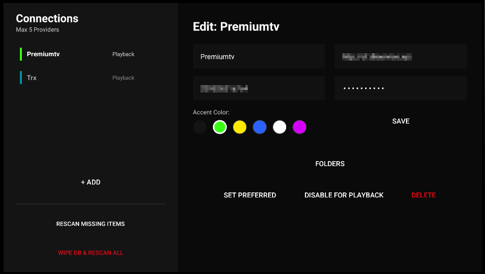
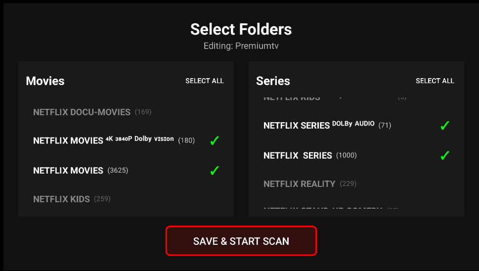
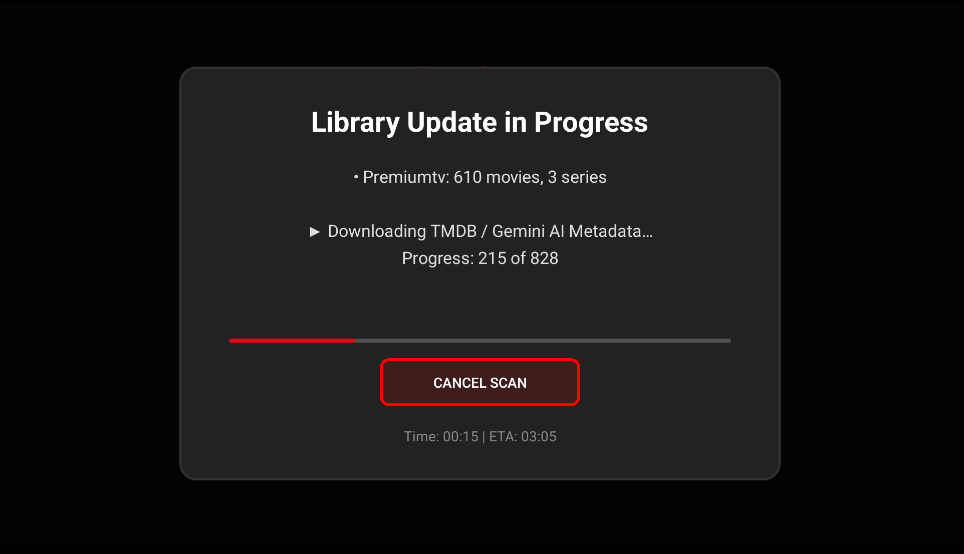
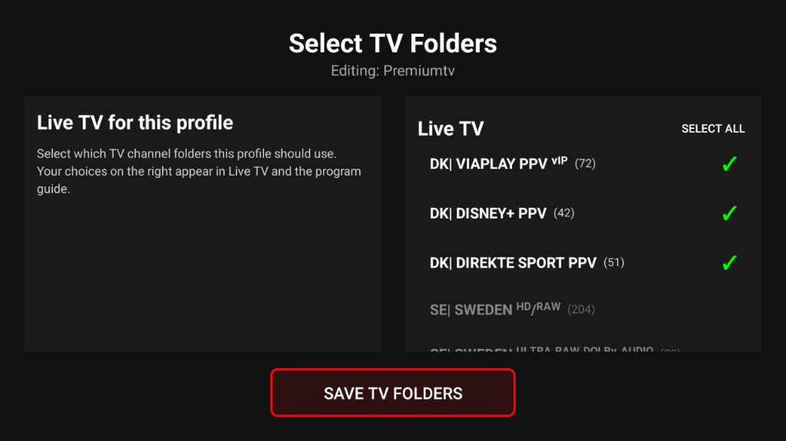

2. First-time setup
New TV or fresh install
The app typically guides you in this order:
- App language
- New device or restore from cloud
- Create profile (name, avatar, optional kids profile)
- Cloud Sync — can be skipped
- Gemini API — can be skipped
- Metadata language (TMDB)
- Add IPTV source
- Select TV channel folders
- Select movie and series folders → scan
Add IPTV source
Settings → Accounts & Connections → IPTV Providers
You can type the server URL, username and password on the TV, or scan the QR code with your phone on the same Wi-Fi. Use Test before Save. You can connect up to 5 providers.

Screenshot needed: 10-provider-manager.png'">Select movie and series folders
After saving the provider: Select Movies and Series → mark the categories you want → Save & Start Scan.

Screenshot needed: 12-category-selection.png'">
Screenshot needed: 13-scan-progress.png'">Select TV folders (Live TV)
On the same provider: Select TV Channels → mark the channel groups you want → Save TV Folders. Live TV and the program guide only show folders you selected.
If you open Live TV before selecting folders, the app shows a short setup guide that takes you back to Providers.

Screenshot needed: 34-select-tv-folders.png'">Optional: custom TV guide (XMLTV)
From IPTV Providers, choose + Manage XMLTV to add up to 3 extra household-wide XMLTV lists, see EPG source status, or refresh all guides now. Lists can also be added with a QR code from your phone.
Restore from another TV
During setup: choose Restore and enter your Cloud Sync PIN and Google account.